vis-6-multivariate.pdf
บทเรียนสุดท้ายของครึ่งแรก — เมื่อข้อมูลมีมากกว่า 2 ตัวแปร การเข้ารหัสทุกอย่างลง mark เดียวเริ่มพังทลาย บทนี้รวมเทคนิคเฉพาะทางที่ออกแบบมาสำหรับข้อมูลหลายมิติโดยเฉพาะ พร้อมกับดักทางการรับรู้ (Simpson's Paradox, visual variable separability) ที่ทำให้การตีความข้อมูลหลายตัวแปรผิดพลาดได้ง่ายกว่าที่คิด.
Slide เตือนผ่านตัวอย่าง scatter plot: แนวโน้มภาพรวม (overall trend) อาจเป็น ขาขึ้น ทั้งที่ทุกกลุ่มย่อย (subgroup) เมื่อแยกดูกลับเป็น ขาลง ทั้งหมด — เกิดจากตัวแปรแฝง (confounding variable) ที่ไม่ได้แสดงในภาพ นี่คือเหตุผลสำคัญที่ต้องระวังเวลาสรุปผลจากข้อมูลหลายตัวแปรที่ยุบรวมกันเป็นภาพเดียว.
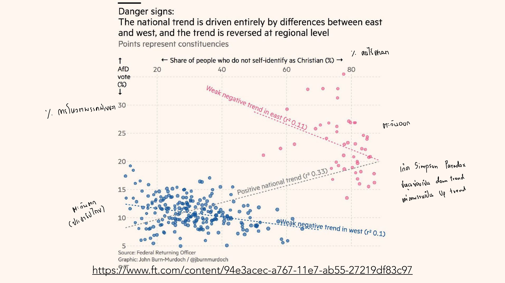
ตัวอย่างจริงจาก Financial Times นี้อธิบายกับดักได้ชัดมาก: ถ้าดูแค่เส้นแนวโน้มรวมทั้งประเทศ (จุดทุกสีปนกัน) จะสรุปว่า "เขตที่มีคนไม่นับถือคริสต์เยอะ มักโหวต AfD มากกว่า" (trend ชี้ขึ้น, r²=0.33) แต่พอแยกสีตามภาค — ภาคตะวันออกกับภาคตะวันตก — กลับพบว่าเส้นแนวโน้มภายในแต่ละภาคชี้ลงทั้งคู่ ทำไมถึงเป็นแบบนี้ได้? เพราะภาคตะวันออกมีทั้งสัดส่วนคนไม่นับถือศาสนาสูงกว่าและฐานเสียง AfD สูงกว่าภาคตะวันตกโดยรวมอยู่แล้ว (ด้วยเหตุผลทางประวัติศาสตร์อื่น) พอเอาสองภาคมาปนกัน จุดของภาคตะวันออกทั้งกลุ่มจึงลอยขึ้นไปอยู่มุมขวาบนของกราฟ ดึงเส้นแนวโน้มรวมให้ชี้ขึ้นตาม ทั้งที่แต่ละภาคแยกกันจริง ๆ กลับสัมพันธ์กันตรงข้าม — นี่คือเหตุผลที่ต้องถามเสมอว่า "จุดสีต่างกันในกราฟที่เห็นซ่อนตัวแปรที่สามอยู่หรือเปล่า" ก่อนเชื่อ trend รวม.
Visual mark หนึ่งชิ้นรับ visual variable ได้จำกัด ยิ่งยัดหลายมิติเข้า mark เดียว (position x, position y, size, color, shape พร้อมกัน) ยิ่งเกิดปัญหา many-to-one mapping — mark เดียวพยายามสื่อความหมายมากเกินกว่าที่สมองจะแยกแยะได้ (Tamara Munzner, 2014).
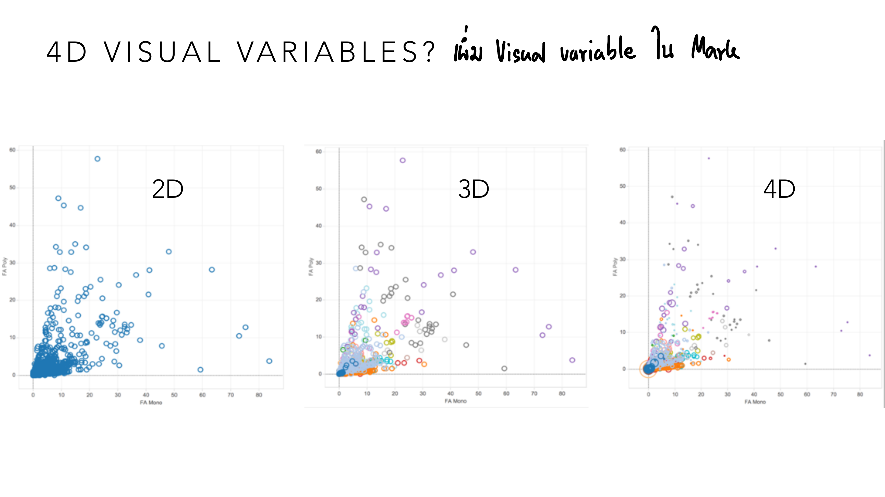
ลองไล่ทีละขั้นตามสไลด์นี้: แผง 2D ใช้แค่ตำแหน่ง x,y — มองปราดเดียวก็เห็นว่าจุดส่วนใหญ่กระจุกอยู่มุมล่างซ้าย มีบางจุดกระเด็นออกไปไกล พอเพิ่มสีเข้ารหัสมิติที่ 3 (แผง 3D) มิติใหม่นี้เพิ่มข้อมูลเข้ามาจริง แต่บริเวณที่จุดชนกันแน่นอยู่แล้ว (มุมล่างซ้าย) สีของแต่ละจุดเริ่มบังกันเอง มองไม่ออกว่าจุดไหนสีอะไรกันแน่ พอเพิ่มขนาดเข้ารหัสมิติที่ 4 อีกชั้น (แผง 4D) บริเวณหนาแน่นเดิมนั้นกลายเป็นก้อนสีปนกันจนนับจุดไม่ได้เลย — สังเกตว่าปัญหาไม่ได้เกิดจาก "มิติเยอะ" โดยตรง แต่เกิดจากมิติใหม่ทุกมิติถูกยัดใส่ตำแหน่งเดิมที่แน่นอยู่แล้ว ยิ่งเพิ่มยิ่งบังกันเอง.
Munzner (2014) จัดระดับว่าคู่ visual variable ไหน "แยกรับรู้ได้อิสระ" (separable) กับไหน "รบกวนกันเอง" (interference) เวลาใช้พร้อมกันบน mark เดียว:
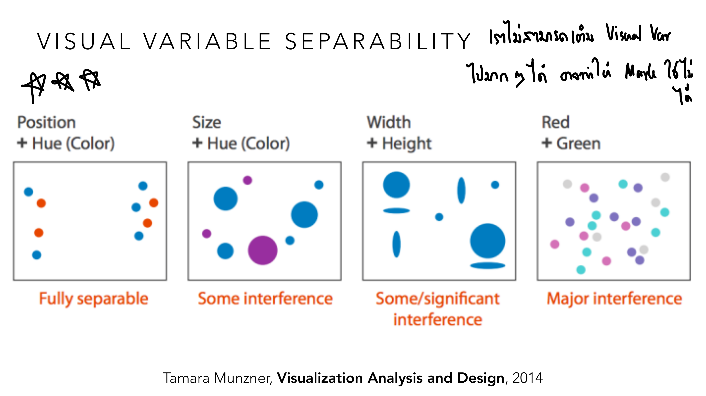
ลองเทียบ 2 สถานการณ์ที่ต่างกันสุดขั้ว: แผนที่จุดร้านค้าที่ใช้ "ตำแหน่ง" บอกที่ตั้งและ "เฉดสี" บอกประเภทร้าน (อาหาร/เสื้อผ้า/อิเล็กทรอนิกส์) — ต่อให้จุดสีต่างกันอยู่ใกล้กันมาก คุณยังกะระยะห่างจริงและแยกประเภทร้านได้พร้อมกันสบาย ๆ เพราะ Position กับ Hue เป็นคู่ "Fully separable" เทียบกับแผนภูมิที่ใช้ "สีแดง" บอกยอดขาย ตก และ "สีเขียว" บอกยอดขาย โต วางอยู่ติดกัน — คนตาบอดสีแดง-เขียว (~8% ของประชากร ตามที่เรียนใน Lesson 2) จะแยกสองสถานะนี้ไม่ออกเลย เพราะ Red+Green คือคู่ "Major interference" ที่แย่ที่สุดในตาราง บทเรียนคือ: เลือกคู่ channel ที่จะใช้ร่วมกันต้องเช็คตารางนี้ก่อน ไม่ใช่แค่เลือกเพราะแต่ละอันดูดีทีละตัว.
| คู่ Visual Variable | ระดับการรบกวน |
|---|---|
| Position + Hue (Color) | Fully separable — แยกอ่านได้อิสระที่สุด |
| Size + Hue (Color) | Some interference |
| Width + Height | Some/significant interference |
| Red + Green | Major interference — แย่ที่สุด (ซ้ำเติมปัญหา color blindness จาก Lesson 2 ด้วย) |
ใช้เมื่อมี 3 ตัวแปรที่รวมกันได้ค่าคงที่เสมอ (เช่น สัดส่วน 3 กลุ่มรวมเป็น 100%) พล็อตลงสามเหลี่ยม 2 มิติ — ใช้ได้เฉพาะกรณีพิเศษนี้เท่านั้น
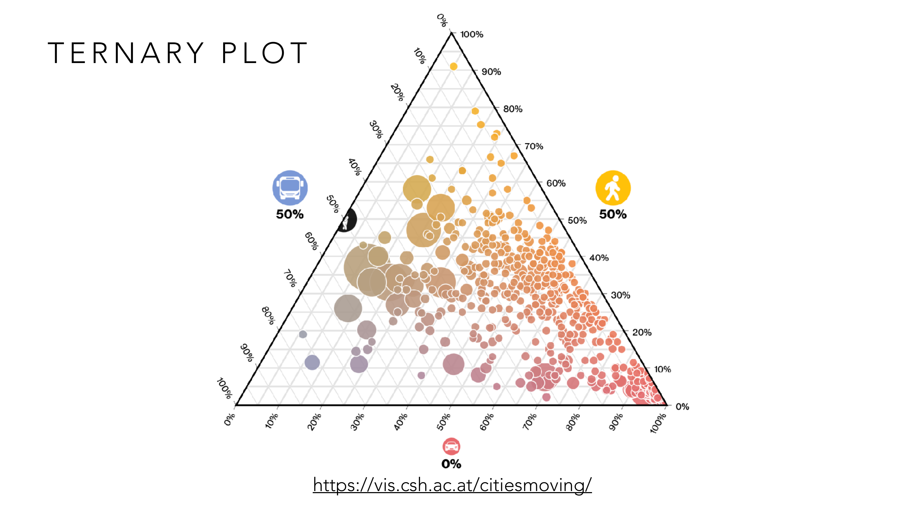
ตัวอย่างนี้ใช้สัดส่วนการเดินทาง 3 แบบของแต่ละเมือง (bus/walking/car ที่ต้องรวมกันได้ 100% เสมอ) — เมืองที่คนเดินเท้าเป็นหลักไม่ใช้รถเลย จุดของมันจะอยู่ชิดมุม "walking" สุด ๆ ส่วนเมืองที่พึ่งรถยนต์เท่านั้นจุดจะอยู่ชิดมุม "car" ลองดูเมืองตัวอย่างที่มีสัดส่วน bus 50% / walking 50% / car 0% — เพราะไม่ใช้รถยนต์เลย จุดของมันจะต้องอยู่บนเส้นขอบระหว่างมุม bus กับมุม walking พอดี (ห่างจากมุม car เท่ากับระยะทางเต็มด้าน) ไม่มีทางลอยเข้ากลางสามเหลี่ยมได้ — นี่คือข้อจำกัดสำคัญของ ternary plot: ใช้ได้เฉพาะเมื่อ 3 ตัวเลขบวกกันได้ค่าคงที่เท่านั้น ถ้าเอาตัวแปรที่ไม่ได้บวกกันเป็น 100% (เช่น อายุเฉลี่ย, รายได้) มาใส่แทน ตำแหน่งบนสามเหลี่ยมจะไม่มีความหมายอะไรเลย.
ตัวอย่างที่สองใช้ ternary plot วิเคราะห์การเมืองไทยได้อย่างน่าทึ่ง — เว็บ elect.in.th (ทีมเดียวกับที่ทำข้อมูล SEA Games ใน Lesson 3 และ 10) วางตำแหน่งคณะรัฐมนตรีแต่ละชุดตาม "สัดส่วนความสัมพันธ์" กับ 3 ขั้วอำนาจ:
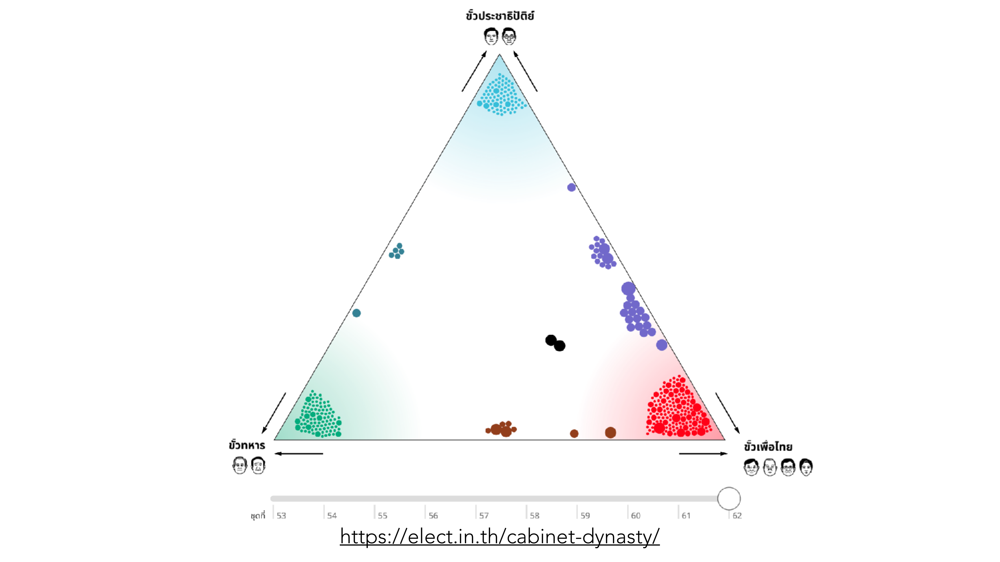
สามมุมของสามเหลี่ยมคือ 3 ขั้วอำนาจการเมืองไทย — ขั้วประชาธิปัตย์ (บนสุด) ขั้วทหาร (ล่างซ้าย) ขั้วเพื่อไทย (ล่างขวา) — แต่ละจุดคือคณะรัฐมนตรีชุดที่ 53-62 ตำแหน่งของแต่ละจุดสะท้อนว่ารัฐมนตรีชุดนั้นใกล้ชิดกับขั้วไหนมากที่สุด (สัดส่วนสามค่าที่รวมกันได้ 100% เสมอ ตรงตามเงื่อนไขที่ ternary plot ต้องการ) — สังเกตกลุ่มก้อนสีที่ชัดเจนมาก: จุดสีฟ้ากระจุกอยู่ใกล้มุมบนสุด (ยุครัฐบาลใกล้ชิดขั้วประชาธิปัตย์) จุดสีเขียวกับสีแดงกระจุกอยู่มุมล่างสองมุม (ยุครัฐบาลทหารกับยุครัฐบาลเพื่อไทย) ในขณะที่จุดสีม่วงลอยอยู่กลาง ๆ ค่อนไปทางขั้วเพื่อไทย (รัฐบาลผสมที่ยังโน้มเอียงทางหนึ่งชัดเจน) — ตัวอย่างนี้แสดงพลังของ ternary plot ได้ชัดกว่าตัวอย่างเมือง: มันไม่ได้แค่ "จัดกลุ่มข้อมูล" แต่เผยให้เห็นวิวัฒนาการของอำนาจการเมืองไทยเป็นภาพเดียวที่ตารางตัวเลขคณะรัฐมนตรี 62 ชุดไม่มีทางเล่าเรื่องแบบนี้ได้เร็วเท่า.
รวมหลาย visual variable ไว้ใน mark ผสม (glyph) เดียว — Chernoff Face คือตัวอย่างคลาสสิกที่แมปแต่ละมิติข้อมูลไปยังคุณลักษณะใบหน้า (รูปตา ความกว้างปาก ฯลฯ)
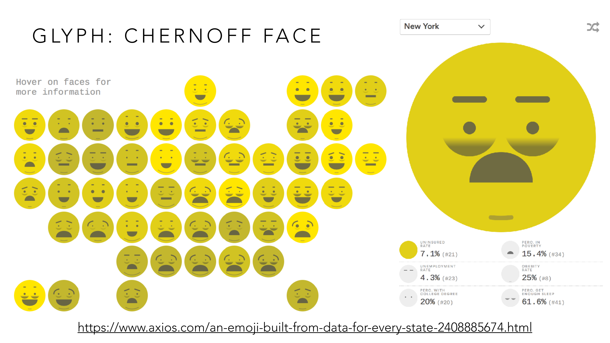
ตัวอย่างนี้เข้ารหัสสถิติ 6 ตัวของแต่ละรัฐไว้ในหน้าเดียว (New York: Uninsured Rate 7.1%, Poverty 15.4%, Unemployment 4.3%, Obesity 25% ฯลฯ) แทนที่จะต้องเปิด 6 แผนที่แยกกันทีละมิติ — ข้อดีคือถ้าคุณคุ้นตากับใบหน้ามนุษย์อยู่แล้ว (สมองเชี่ยวชาญเรื่องนี้เป็นพิเศษ) จะ "รู้สึก" ได้ทันทีว่ารัฐไหน "หน้าบึ้ง" โดยรวม (สถิติแย่หลายด้านพร้อมกัน) โดยไม่ต้องอ่านตัวเลขทีละตัว — แต่ข้อเสียคือถ้าอยากรู้ตัวเลข Unemployment Rate ของรัฐหนึ่งแม่น ๆ การอ่านจาก "ขนาดตา" ในใบหน้าย่อมแม่นน้อยกว่าดูตัวเลขตรง ๆ มาก (ย้อนกลับไปที่อันดับความแม่นยำ Position > Angle > Area ใน Lesson 2 — ตา/ปาก/คิ้วส่วนใหญ่ก็คือ area/angle เข้ารหัสแบบอ้อม) glyph จึงเหมาะกับการดู "ภาพรวมหลายมิติแบบคร่าว ๆ" ไม่เหมาะกับการเทียบค่าที่ต้องแม่นเป๊ะ.
ตัวอย่างที่สองใช้ glyph รูปหน้าคนแบบเดียวกัน แต่ทันสมัยและอ่านง่ายกว่า Chernoff Face ดั้งเดิมมาก เพราะมี legend อธิบายชัดเจนว่าแต่ละส่วนของใบหน้าแทนตัวแปรอะไร:
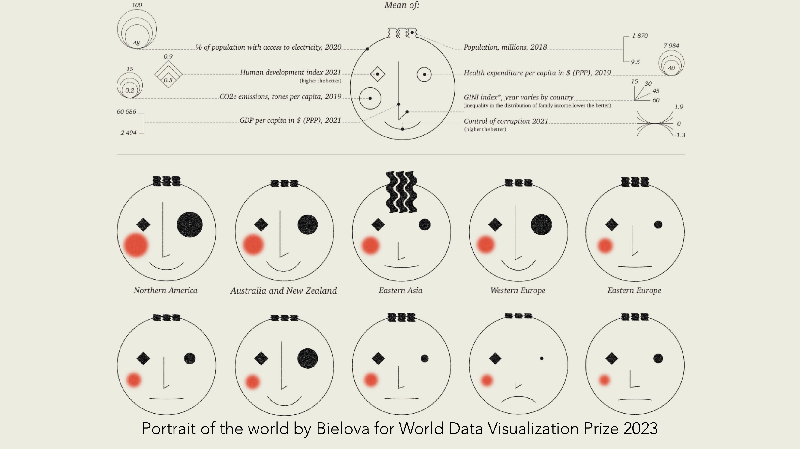
ภาพบนสุดคือ legend ที่แกะรหัสให้เห็นตรง ๆ ว่าอาจารย์หมายถึงอะไรตอนพูดว่า glyph "แมปแต่ละมิติข้อมูลไปยังคุณลักษณะใบหน้า": ทรงผม/คิ้ว = ประชากร, ตาข้างซ้าย (วงกลม) = CO2 emissions, ตาข้างขวา (จุด) = ค่าใช้จ่ายด้านสุขภาพ, รูปเพชรกลางหน้าผาก = Human Development Index, มุมเส้นจมูก = GINI index, ปาก = ระดับควบคุมคอร์รัปชัน, ขนาดวงสีแดงบนแก้ม = GDP ต่อหัว — ลองเทียบ 2 ภูมิภาคที่ต่างกันสุดขั้ว: "Eastern Asia" มีคิ้วหยักซิกแซกหนาผิดปกติ (ประชากรสูงมาก ตรงกับความจริงที่มีจีน/ญี่ปุ่น/เกาหลีรวมกัน) ในขณะที่ "Eastern Europe" มีปากตรงเรียบไม่ยิ้ม (ควบคุมคอร์รัปชันได้แย่กว่าภูมิภาคอื่น) และวงแก้มแดงเล็กกว่า Northern America ชัดเจน (GDP ต่อหัวต่ำกว่า) — เพราะมี legend กำกับความหมายของแต่ละส่วนหน้าไว้ชัดเจนตั้งแต่ต้น glyph ชุดนี้จึงใช้เปรียบเทียบภูมิภาคต่าง ๆ ได้อย่างมีหลักการ ไม่ใช่แค่ "รู้สึกว่าหน้าไหนดูดีกว่า" เฉย ๆ แบบที่ Chernoff Face ดั้งเดิมมักถูกวิจารณ์.
ซ้อนมิติ categorical เพิ่มเข้าไปในชาร์ตเดียวผ่าน facet: ตัวอย่างจาก slide ใช้ Altair encode x='host', y='mean(gold)', column='name', color='name' — รวม 4 มิติ (host, gold, name×2 แบบ) ในชาร์ตเดียว
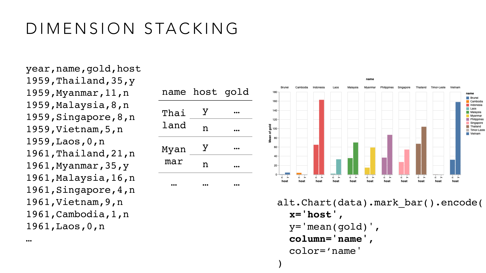
ลองไล่ตามคำถามที่ dimension stacking ตอบ: "แต่ละประเทศในซีเกมส์ได้เหรียญทองเฉลี่ยเท่าไหร่ และปีที่เป็นเจ้าภาพเองได้เยอะกว่าปีที่ไม่ได้เป็นเจ้าภาพไหม?" คำถามนี้มี 3 มิติซ่อนอยู่ (ประเทศ, host หรือไม่, จำนวนเหรียญ) มากกว่าที่ scatter plot ธรรมดา (2 แกน) จะรับไหว — dimension stacking แก้โดยแยกเป็นแผงย่อยหนึ่งแผงต่อหนึ่งประเทศ (column='name') แล้วในแต่ละแผงค่อยเทียบ 2 แท่ง: host=n กับ host=y (x='host') ผลลัพธ์ที่เห็นจริงคือ Indonesia แท่ง host=y (~165 เหรียญ) สูงกว่า host=n (~65 เหรียญ) มาก แปลว่าตอนอินโดนีเซียเป็นเจ้าภาพเอง ได้เหรียญทองเยอะกว่าปกติชัดเจน — คำตอบที่ซับซ้อนขนาดนี้จะดูจากตารางตัวเลขดิบตรง ๆ ไม่มีทางเห็นภาพรวมได้เร็วขนาดนี้.
ตาราง scatter plot ของทุกคู่ตัวแปร (pairwise) ในชุดข้อมูล — เห็นความสัมพันธ์ระหว่างทุกคู่พร้อมกัน แต่จำนวน subplot โตเร็วตามจำนวนตัวแปร
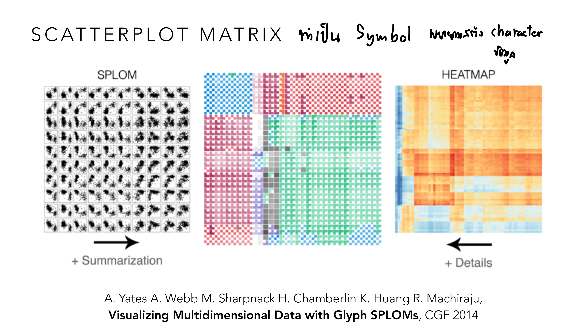
ลองนึกภาพเป้าหมายต่างกัน 2 แบบเวลาใช้ตารางแบบนี้: ถ้าอยากรู้แค่ "ภาพรวมคร่าว ๆ ว่าตัวแปรคู่ไหนมี pattern น่าสนใจ" ก่อนจะลงลึก — SPLOM (จุดกระจายเล็ก ๆ เต็มตาราง) พอเหลือบมองก็เห็นว่า cell ไหนมีรูปทรงแปลก ๆ (เช่นเป็นเส้นเฉียงชัด แปลว่าคู่นั้น correlation สูง) เหมาะกับขั้นสำรวจเร็ว ๆ — แต่ถ้าอยากรู้ค่าจริงของแต่ละคู่แม่น ๆ ต้องขยับไปทาง Heatmap (ไล่สีตามค่าตัวเลขจริง) ที่ให้รายละเอียดเชิงตัวเลขมากกว่า ต้นทุนคือภาพรวมทั้งตารางจะดูรกกว่าเพราะสีเข้ม-อ่อนสลับกันเยอะ อ่านทีละ cell ยากกว่าการกวาดตาดู pattern แบบ SPLOM — เลือกใช้แบบไหนขึ้นกับว่ากำลังอยู่ขั้นตอน "สำรวจหา pattern" หรือ "ยืนยันค่าตัวเลข" ของ pipeline ที่เรียนใน Lesson 3.
แต่ละแกนพุ่งออกจากจุดศูนย์กลาง 1 แกน = 1 มิติ เชื่อมจุดเป็นรูปหลายเหลี่ยม — งานวิจัย "Surfacing Visualization Mirages" (McNutt, Kindlmann & Correll, CHI 2020) ชี้ว่าพื้นที่รูปหลายเหลี่ยมที่เห็นบิดเบือนได้ง่ายมาก ขึ้นกับลำดับที่วางแกน
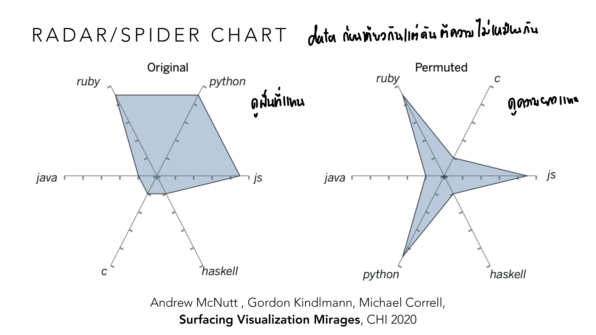
ตัวอย่างนี้ใช้ข้อมูลเดียวกันเป๊ะ (คะแนนความนิยม 6 ภาษาโปรแกรมมิง: ruby, python, js, haskell, c, java) วาด 2 ครั้ง สลับแค่ตำแหน่งแกนรอบวง — เวอร์ชัน "Original" ที่วางภาษาซึ่งมีคะแนนใกล้เคียงกันให้อยู่ติดกัน ได้รูปทรงคล้ายสี่เหลี่ยมป้าน ๆ พื้นที่ใหญ่ ดู "มั่นคง" เวอร์ชัน "Permuted" ที่สลับตำแหน่งจนภาษาคะแนนสูงกับต่ำอยู่สลับฟันปลากัน ได้รูปดาวแฉกแหลมพื้นที่เล็กกว่ามาก ดู "อ่อนแอ" กว่าเดิม — ถ้ามีคนเอา 2 ภาพนี้ไปเทียบ "บริษัท A" กับ "บริษัท B" โดยตั้งใจ (หรือไม่ตั้งใจ) วางลำดับแกนให้บริษัทหนึ่งได้รูปทรงใหญ่ อีกบริษัทได้รูปทรงแฉกเล็ก ผู้อ่านจะรู้สึกว่าบริษัทแรก "แข็งแกร่งกว่า" ทันที ทั้งที่ตัวเลขจริงเหมือนกันเป๊ะ — นี่คือเหตุผลที่ radar chart ถูกจัดเป็นชาร์ตที่ "หลอกตาได้ง่ายโดยไม่ต้องโกหกตัวเลขสักตัว" แค่เลือกลำดับแกนก็พอ.
(Alfred Inselberg, 1985) แต่ละมิติ = แกนตั้งขนานกัน 1 เส้น แต่ละแถวข้อมูล = เส้น polyline ที่ลากผ่านทุกแกน (ตัวอย่างคลาสสิก: ชุดข้อมูลรถยนต์ MPG/Cylinders/Horsepower/Weight/Acceleration/Year/Origin) — ลำดับแกนมีผลมากต่อ pattern ที่มองเห็น ต้องลองสลับลำดับหลายแบบ
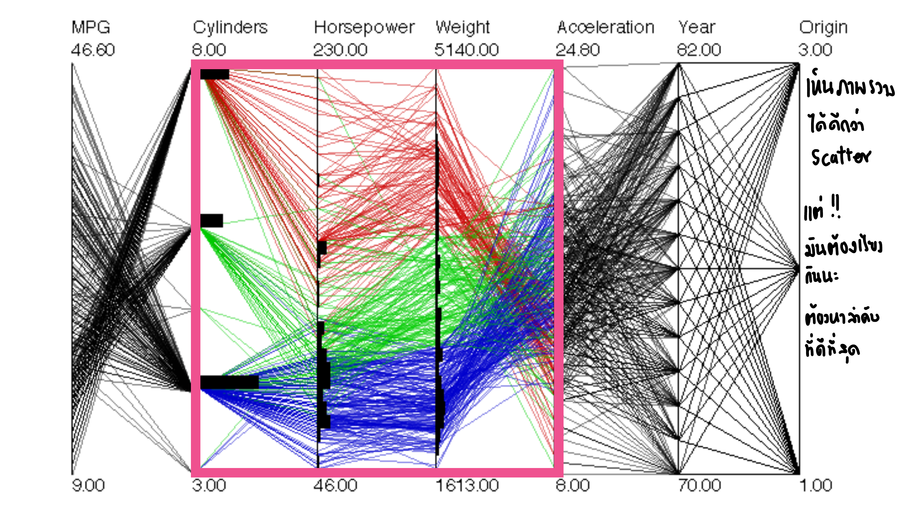
ตัวอย่างรถยนต์ 7 มิตินี้ตอบคำถามที่ scatter plot คู่เดียวตอบไม่ได้: "รถที่มี Cylinders เยอะ (แปดสูบ) กับรถที่มี Cylinders น้อย (สามสูบ) ต่างกันยังไงในมิติอื่นด้วย?" — เพราะแกน Cylinders-Horsepower-Weight ถูกวางติดกัน เส้นสีแดง (cylinders สูง) กับเส้นสีน้ำเงิน (cylinders ต่ำ) จึงลากผ่านช่วงนี้เป็น 2 กลุ่มแยกกันชัดเจน อ่านออกทันทีว่า "รถ cylinders เยอะ มักหนักและแรงม้าสูงตามไปด้วย" — แต่พอเลยไปถึงช่วง Acceleration-Year-Origin เส้นทุกสีเริ่มพันกันจนแยกกลุ่มไม่ออก ไม่ใช่เพราะไม่มีความสัมพันธ์ แต่อาจเป็นเพราะแกนที่วางติดกันไม่ใช่คู่ที่เผย pattern ได้ดีที่สุด — ถ้าลองสลับเอา "Origin" มาวางติด "MPG" แทน อาจเห็น pattern ใหม่ที่ตอนนี้มองไม่เห็นเลยก็ได้ นี่คือเหตุผลที่ต้อง "ลองสลับแกนหลายแบบ" ไม่ใช่วางตามลำดับที่ข้อมูลมาให้เฉย ๆ.
ตลอดครึ่งแรกของวิชา กรอบคิดเดียวกันวนกลับมาซ้ำแล้วซ้ำเล่า: Effective/Functional (ใช้งานได้จริง), Convincing/Truthful (ไม่บิดเบือนข้อมูล), Insightful/Expressive (สื่อเฉพาะสิ่งที่มีจริง ไม่มากไม่น้อยไป) — ไม่ว่าจะเป็นข้อมูล 1 ตัวแปรหรือ 7 ตัวแปร คำถามที่ต้องถามตัวเองเสมอคือ: ข้อมูลประเภทไหน (nominal/ordinal) → visual variable ไหนแม่นยำที่สุด (position > angle > area) → ยังคง truthful และ expressive อยู่หรือไม่.
ไล่ทุกหน้าของ vis-6-multivariate.pdf — หน้าที่มี ✓ ถูกอธิบายและ/หรือใส่รูปในเนื้อหาข้างบนแล้ว ที่เหลือเป็นตัวอย่างประกอบ/ลิงก์อ้างอิง (etc).
| หน้า | เนื้อหา | สถานะ |
|---|---|---|
| 1–2 | ปก + ตารางเรียนทั้งเทอม | etc — บริบทวิชา |
| 3–13 | Scatterplot & Correlation ทบทวนจาก Lesson 5 (Mark/Var, guessthecorrelation.com, Cleveland/Diaconis/McGill 1982) | etc — สอนละเอียดแล้วใน Lesson 5 หัวข้อ 5 |
| 14–19 | Shuffling/Binning/Sampling ทบทวนจาก Lesson 5 | etc — สอนละเอียดแล้วใน Lesson 5 หัวข้อ 6 |
| 20–24 | บันไดมิติ 1D→2D→3D และปัญหาการอ่านชาร์ต 3D | etc — ปูพื้นก่อนเข้าเนื้อหาหลัก (นำไปสู่หัวข้อ 2) |
| 25–27 | ตัวอย่าง 3D chart ที่อ่านยาก + อ้างอิง (Ben Orlin; Shukla & Parsons 2023) | etc — ตัวอย่างประกอบ ไม่ใช่ทฤษฎีที่ทำ quiz แยก |
| 28 | เกริ่นนำ Ternary Plot | ✓ ส่วนหนึ่งของหัวข้อ 4 |
| 29–30 | Ternary Plot ตัวอย่างจริง (citiesmoving.com) | ✓ หัวข้อ 4 (มีรูป) |
| 31 | ตัวอย่าง ternary plot เลือกตั้งสิงคโปร์ (whatthestreet.com) | etc — ตัวอย่างประกอบ (ลิงก์อ้างอิง) |
| 32 | Cabinet Dynasty — คณะรัฐมนตรีไทยบน ternary plot (elect.in.th) | ✓ หัวข้อ 4 (มีรูป) |
| 33 | คำถาม "4D and beyond?" | ✓ ส่วนหนึ่งของหัวข้อ 2 |
| 34–35 | ไดอะแกรม 4D Visual Variables (2D/3D/4D บน mark เดียว) | ✓ หัวข้อ 2 (มีรูป) |
| 36 | (ว่าง) | etc |
| 37–39 | Visual Variable Separability (ทยอยแสดงทีละคู่) | ✓ ส่วนหนึ่งของหัวข้อ 3 |
| 40 | Visual Variable Separability ฉบับเต็ม (Position+Hue ถึง Red+Green) | ✓ หัวข้อ 3 (มีรูป) |
| 41–42 | เกริ่นนำ Glyph + อ้างอิง Borgo et al. 2013 | ✓ ส่วนหนึ่งของหัวข้อ 4 |
| 43 | Glyph: Chernoff Face | ✓ หัวข้อ 4 (มีรูป) |
| 44 | Portrait of the World by Bielova, World Data Visualization Prize 2023 | ✓ หัวข้อ 4 (มีรูป) |
| 45–48 | ตัวอย่าง glyph เพิ่มเติม (National Geographic, VisualIDs, semen analysis, MetaGlyph) | etc — ตัวอย่างประกอบ Glyph เพิ่มเติมนอกเหนือ Chernoff Face/Portrait of the World |
| 49–50 | Dimension Stacking (ข้อมูล SEA Games + โค้ด Altair) | ✓ หัวข้อ 4 (มีรูป) |
| 51–54 | เกริ่นนำ Scatterplot Matrix + อ้างอิง (Towers et al. 2015, mass killings dataset) | ✓ ส่วนหนึ่งของหัวข้อ 4 |
| 55 | Scatterplot Matrix พร้อม glyph ในแต่ละช่อง (Yates et al. 2014) | ✓ หัวข้อ 4 (มีรูป) |
| 56 | เกริ่นนำ Radar/Spider Chart | ✓ ส่วนหนึ่งของหัวข้อ 4 |
| 57 | Radar/Spider Chart + อ้างอิง Surfacing Visualization Mirages | ✓ หัวข้อ 4 (มีรูป) |
| 58 | ลิงก์ tpmap.in.th (ตัวอย่างประยุกต์ใช้จริงในไทย) | etc |
| 59–63 | เกริ่นนำ Parallel Coordinates Plot + อ้างอิง Inselberg 1985 | ✓ ส่วนหนึ่งของหัวข้อ 4 |
| 64–67 | Parallel Coordinates ตัวอย่างข้อมูลรถยนต์ (ลองสลับลำดับแกนหลายแบบ) | ✓ หัวข้อ 4 (มีรูป) |
| 68 | ลิงก์ Washington Post Olympics (ตัวอย่างประยุกต์ใช้จริง) | etc |
| 69 | (ว่าง) | etc |
| 70–76 | งานวิจัยเชิงลึกต่อยอด Parallel Coordinates (Parallel Sets สำหรับ categorical data, การจัดการ missing data, Line Weaver, Shifted Paired Coordinates 3D) | etc — งานวิจัยเชิงลึก นอกขอบเขต quiz หลัก แต่เป็นแหล่งอ่านต่อดี ๆ ถ้าสนใจ parallel coordinates เพิ่มเติม |
สงสัยตรงไหน ถามได้เลยในแชท — ผมเป็นผู้สอนของคุณ ถามซ้ำได้ ถามลึกได้ ไม่ต้องเกรงใจ. เมื่อพร้อมทบทวนรวม ให้บอกได้เลย จะออกแบบ quiz แบบผสมข้ามบทให้.